all transients in sector01 (29 total)
Each figure has three panels. The top panel shows the transient light curve, the middle panel shows the local background (estimated in an annulus), and the bottom panel shows a "background-model corrected" light curve. Details about the background model are in the README.
The vertical red line marks the time of discovery reported to TNS. Other useful metadata from TNS is in the figure title.
Note that the top and bottom panel are in magnitudes, while the middle panel is in differential flux units. The magnitudes are calibrated to the flux in the reference image used for image subtraction. Thus, flux from the host galaxy is included in these magnitudes.
3-sigma upper limits are plotted as triangles with no errorbars. A typical limiting magnitude is 19.6 in 30 minutes or 18.4 in 200 seconds (for low backgrounds).
The links allow you to download the light curve data as a text file.
More details in the README.
2018fhw_detrended
2018hyq
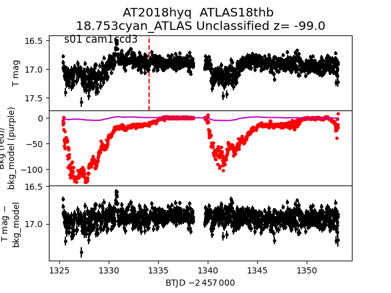
2018flq
 2018fhs
2018fmg
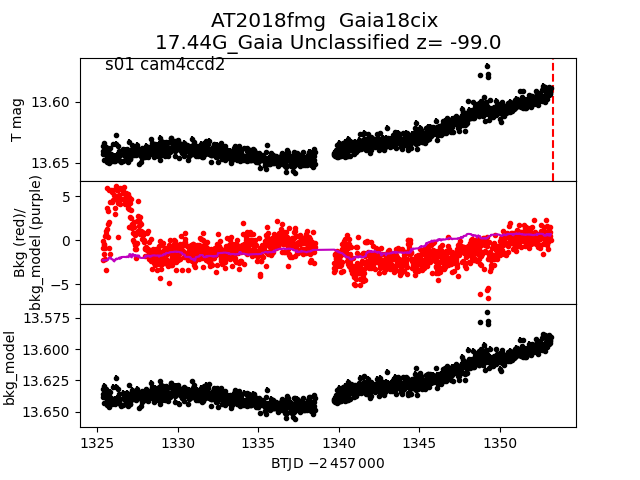
2018flt
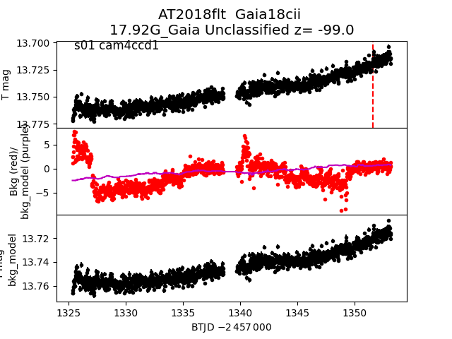
2018emt
2018fhs
2018fmg
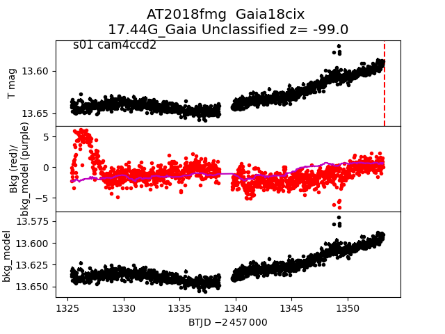
2018flt
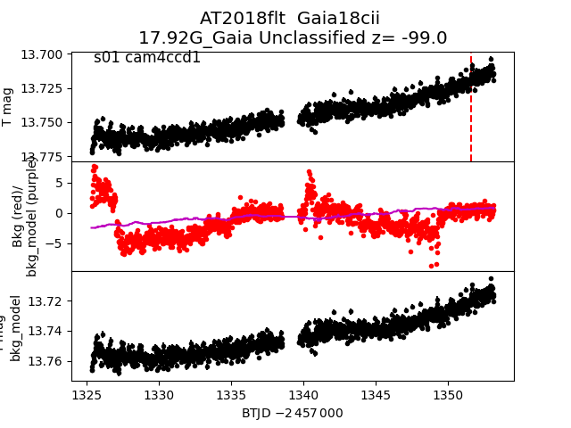
2018emt
 2018eel
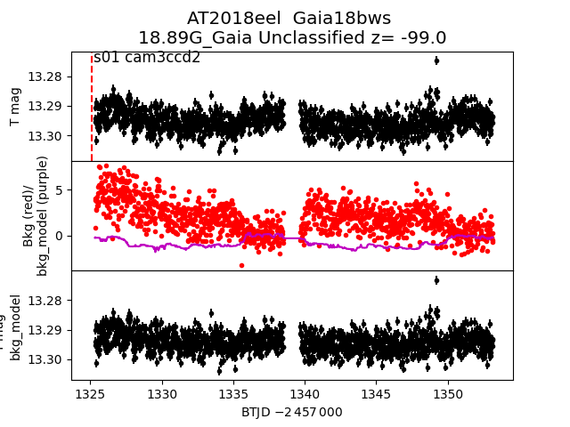
2018goa
2018eel
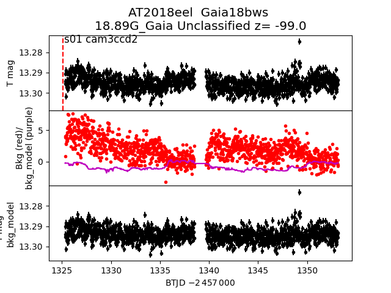
2018goa
 2018evo
2018eqo
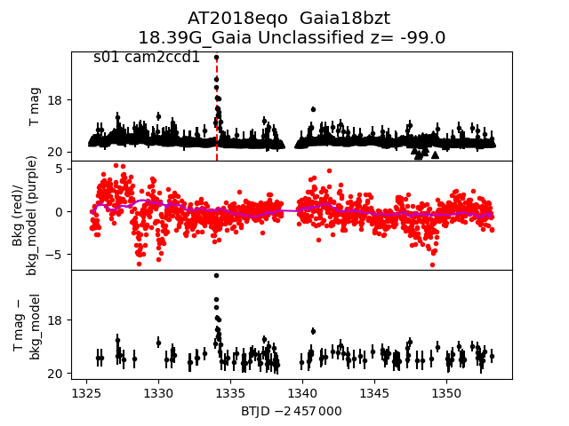
2018eny
2018evo
2018eqo
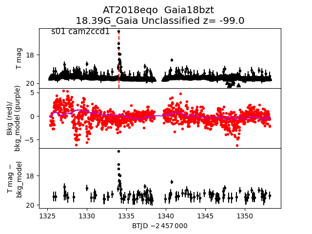
2018eny
 2018flr
2018fgb
2018flr
2018fgb
 2018eoc
2018eoc
 2018esw
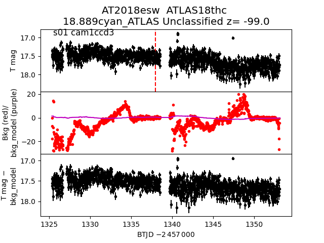
2018eod
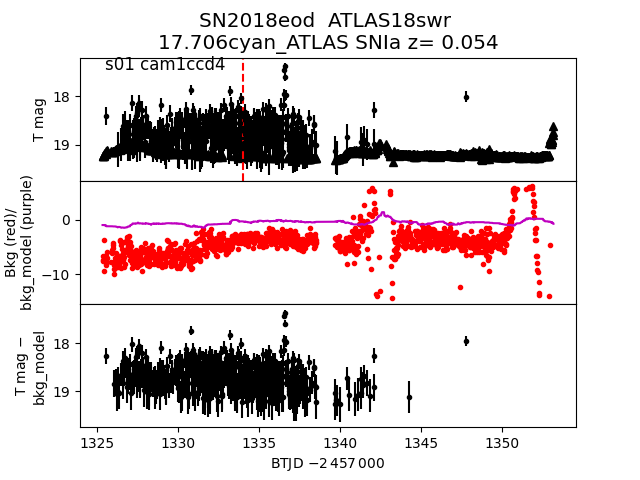
2018esp
2018esw
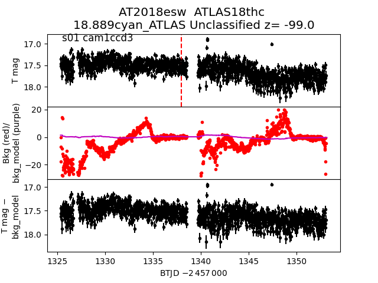
2018eod
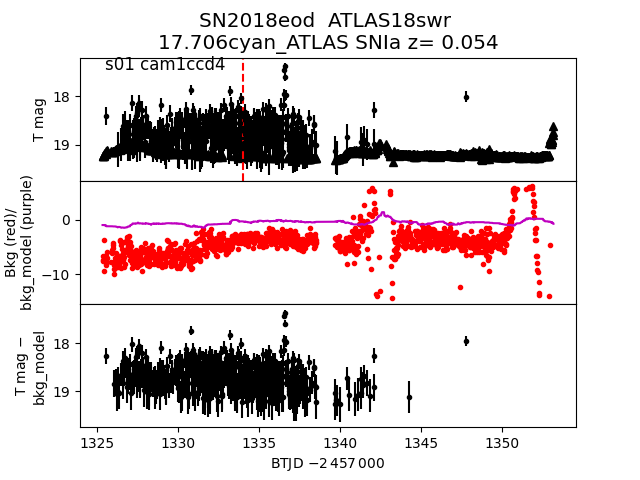
2018esp
 2018fhw
2018fhw
 2018flj
2018flj
 2018fhw
2018fdx
2018eph
2018fhw
2018fdx
2018eph
 2018eoa
2018eoa
 2018fdw
2018flz
2018fdw
2018flz
 2018fbm
2018fll
2018fbm
2018fll
 2018exc
2018exc